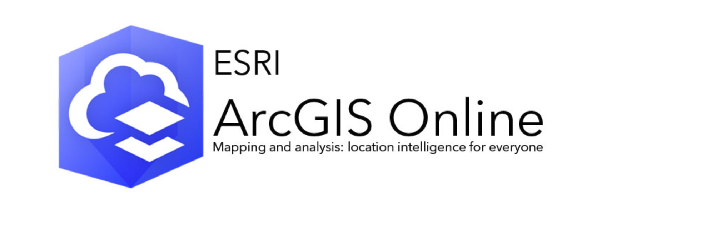
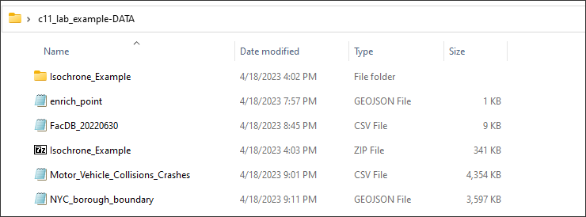

Preamble
In this eleventh assignment, you will utilize the Class 11 Technical Lab as a guide to complete your eleventh mapping project utilzing ArcGIS Online. In this assignment , you will make a choice of analysis methods introduced in the technical lab. You will choose at least one vector dataset of your choice to upload to ArcGIS Online, and then run your chosen analysis method on the vector input. You can choose from the following methods (including creating a basemap in Mapbox):
Create an Isochrone Map for 1 location or a series of locations of your choice.
Create one Enrichment Layer from a point(s), polygon or line feature of your choice.
Geocode a ‘batch’ (Geocode Location from a Table) of addresses of your choice.
Create a density map from a series of points of your choice.
Develop a custom basemap in Mapbox, migrate it to ArcGIS Online and share this map publicly.
Once complete, you will save, organize and print the results of your analysis with a short writeup of your analysis purpose and method(s).
Assignment 11 - Data

Note: The C11 Technical Lab Data is to be used for the lab alone. For your assignment, you will need to import your own dataset. You can create features at geojson.io, or use another data source - NYC Open Data for example. You will load your data into ArcGIS Online into the Content section as a feature layer just as we do in the lab together.
Class 11 Readings:
This week’s reading that will be featured on the upcoming quiz will be from Essentials of Geographic Information Systems textbook.
The Class 11 quiz on Monday 04/24/23 will feature 10 questions covering content in the textbook Chapter 9:
Essentials of Geographic Information Systems textbook - Chapter 9, pages 175 - 192
Assignment Step 1
In this first assignment step, we will pick up with the basemap created on Monday and develop a share option for this map. Use this process for any map you would like to share as part of your class 11 assignment submission.
Assignment Step 2
Next, we will connect ArcGIS Online to your ArcGIS ArcMap Desktop Software. To do this, open ArcGIS ArcMap Desktop and point to the Web Map first created in Mapbox, now located in Content at ArcGIS Online. You may want to use this type of connection in your final project if you want to develop a custom basemap for presentation purposes of your GIS analysis results.
Assignment Option 1
Next, we will create isochrone distances utilizing features from the Abortion Facility Database - ANSIRH to understand travel distances from within the current 12 states that have banned abortion as detailed in this NYTIMES article.
Assignment Option 2
Next, we will Geocode an address table of NYC facilities located in Brooklyn. Geocoding is a typical GIS task, and ArcGIS Online is a good option by which to achieve dependable, accurate results.
Assignment Option 3
In this option we will demonstrate ESRI’s Enrichment Layer service tool which provides demographic and landscape data for the people, places, and businesses associated with point, line, or area data locations.
Assignment Option 4
this final demonstration, we will develop a new Density Surface from a dense collection of accident crash points in the first months to date of 2023 in NYC. Both Density and Interpolation surfaces are valuable a predictive surfaces that help accentuate underlining data pattern and cluster that may not be evident within the original dataset alone.
Assignment 11 Deliverable
In this final course assignment, you will choose one of the methods we have demonstrated together during the lab to develop your own mapping example. As noted in the preamble above, there are 5 potential options for this assignment. Make sure to include the following in a PDF submission to the assignment location in Canvas:
Either a print or share address of your cartographic output for your chosen method option.
A synopsis writing of your analysis method. Include your and overview of your data input, reasoning for choosing a particular method option and data input, and a short summary of your results.
The assignment 11 deliverable will be due 04/23/23 Sunday at 11:59 PM.